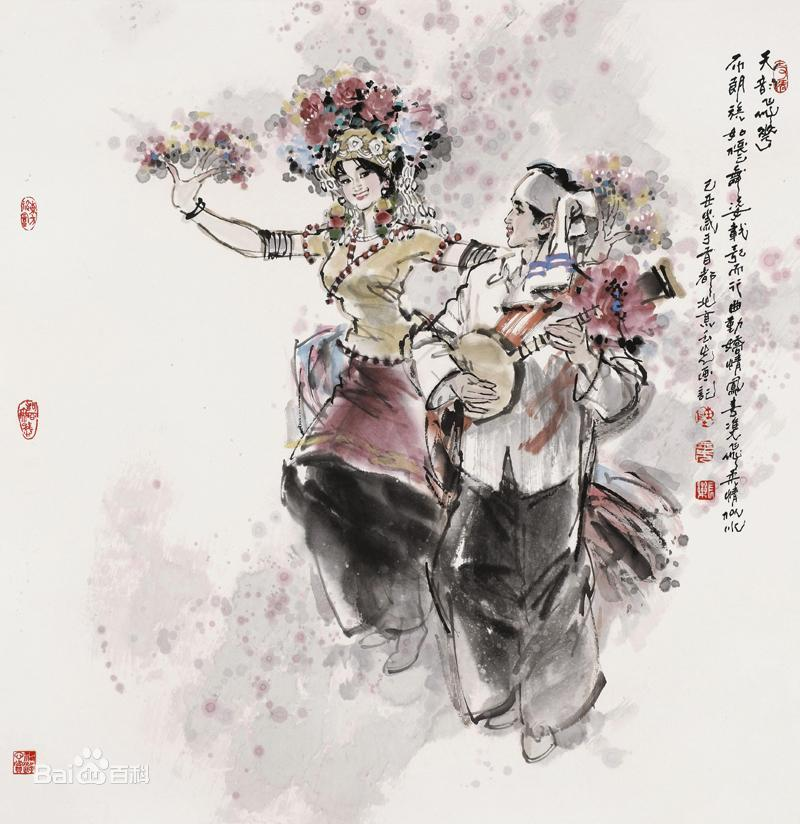

- 民族简介
- 文化习俗
- 历史发展
- 旅游介绍
布朗族
布朗族是一个拥有着悠久历史的少数民族，民族语言为布朗语，属南亚语系孟高棉语族布朗语支，可分为布朗和阿瓦两大方言区，没有本民族的文字。
布朗族有着极为丰富的口头文化，至今仍然保留着最具鲜明特征的民族语言、服饰、歌舞、风俗习性。
布朗族主要分布在云南省西部及西南部沿边地区，根据2010年第六次全国人口普查统计，布朗族总人口数为119639人 。
布朗族有多种自称， 居住在西双版纳的布朗族自称“布朗”或“巴朗”，临沧市和保山市的自称“乌”，墨江、双江、云县、耿马等地的自称“阿瓦”或“瓦”，思茅的自称“本族”，澜沧县文东乡的自称“翁拱”，镇康、景东的自称“乌”或“乌人”。 过去，其他民族对布朗族的称呼也各不相同：双江傣族称之为“腊”，拉祜族称之为“卡帕”、“卡普”，西双版纳傣族称之为“闷”，哈尼族称之为“阿博”或“阿别”，当地汉族及彝族称之为“蒲满”或“濮曼”等。 新中国成立后，根据本民族的意愿，统一称为“布朗族” 。 
信仰
布朗族除了信仰上座部佛教外，还保留着许多原始宗教的传统信仰。 人们普遍信鬼神，崇拜祖先。布朗族认为，他们之所以崇拜不计其数的鬼神，是因为所有的鬼神都有它们各自不同的专司职能，大小及地位高低不同，或利或害，善恶不一。尽管如此，布朗族都一律加以敬奉崇拜。因为他们认为万物有灵，其灵都有欲望，欲望一旦得不到满足，恶者变得更恶，善者则不愿行善；所以，对所有鬼灵的崇拜，除了迎合和讨好鬼神外，同时也是为了换取鬼神满足崇拜者在物质生活或精神生活上各种各样的需求。为此，在一年四季当中，布朗族祭祀鬼神的活动十分频繁。由于鬼神大都依附于森林之中，布朗族对森林极为敬畏，很早就划定并维护着具有生态保护功能的龙山森林和坟山森林。西双版纳布朗族崇信的鬼神以管水的“苦拉”为最大，传说为一人头蛇身的怪物，凡遇洪水猛涨或山崩地坍时，它就会出现，如果人见了便会死去，因而人们必须在每年的关门节和开门节祭祀苦拉神，才会化凶为吉。
服装
布朗族的服饰文化别具一格。生活于群山和森林之中的布朗族，以其独特的方式装扮自己，注意突出个性。由于偏爱黑色，他们的服色往往以黑色和青色为主。
文身
文身是布朗族先民遗留下来的古老习俗。布朗族男子在十四五岁时就要施行纹身，在四肢、胸、腰、腹部和背部刺上各种各样的花纹图案。文身图案颇多，大致可分为鳞刺、字刺、形刺和蕨刺等4种。鳞刺形若鱼鳞又不全似鱼鳞；字刺即将傣文字母按所谓“咒语”或巫术需要排列成表格，刺在身上；形刺大多是动物图形，常见的有龙、虎、狮、象等；蕨刺其形若嫩蕨之尖叶。不论刺哪一种，都按“咒语”、巫术的需要构图。新中国成立后，随着科学文化知识的普及，文身习俗逐渐发生了变化 [1] 。
饮食
布朗人以大米为主要食粮，以玉米、豆类为辅。布朗族人饮食特点是以酸、辣、香、凉、生为主，烹制方法主要有煮、炒、蒸、炸、烧、烤、腌、生食等8种，虽然烹制技术简单，但仍有自己独特的风味。
历史
史学界一般认为布朗族源自古老的“百濮”族群。中国古籍中很早就有对百濮的记载，《尚书·牧誓》中提到参加周武王伐纣的西南诸部落中就有濮人。
史学界根据《华阳国志》记载，认为“哀牢”与濮人的关系密切，永昌（治所在今保山南部）一带是古代“濮人”居住的地区；“濮人”部族众多，分布很广，很早就活动在澜沧江和怒江流域各地其中操孟高棉语的一支可能就是现今布朗族的先民。濮人在我国史籍中有过许多称呼，秦汉时称为“苞满”、“闽濮”，魏、晋、南北朝时称 “闽濮”，隋、唐、五代、宋朝时期称为“朴子蛮”，或“扑子”、“朴子”、“扑”、“蒲满”、“蒲人”等，元、明、清时期称为“蒲满”或“蒲人”等。
自西汉王朝在云南设置益州郡，下辖嶲唐（保山）、不韦（保山以南）等县，濮人地区就纳入了西汉王朝郡县的范围。西晋时，永昌濮人的一部分向南迁移至镇康、凤庆、临沧一带。唐宋时期，“扑人”受南诏、大理政权统治，主要从事采集和狩猎的经济生活。此后，逐步过渡到从事农业生产。元初，滇西蒲人已使用铁锄，其首领每年以一定数量的铁锄作为贡纳，上交元朝政府。明朝典籍记载说：“蒲人……事耕锄，……知汉语，通贸易” 。明朝设置顺宁府（今凤庆一带）时，即以蒲人中的贵族充任土知府。经过长期的民族迁徙和部落、部族的分化融合，原先居住在澜沧江和怒江中下游的濮人的一部分，发展为今天的布朗族。
翁基，景迈山芒景千年布朗族古寨。
从惠民至翁基会经过景迈村，景迈与芒景两个村同在一座山上，景迈主要居住的是傣族，而芒景主要居住的是布朗族。景迈与芒景虽然是两个村，但由于那里有着上万亩的古茶园，许多人会把两村合起来称为景迈芒景。景迈芒景亦被称为千年万亩古茶园。
翁基，因完整保留着布朗族的生态文化和历史传承，加上原始风貌浓郁、自然风光秀丽、民族特色突出的缘故，被誉为“千年布朗古寨”。在政府的重点保护和村民的积极配合下，古村落的整体格局和风貌得以完整保存下来。漫步翁基，蓝天白云下古旧的干栏瓦房，连片的传统民居，居高临下的翁基古寺，身穿布朗服装的老人，让整个寨子一片古朴。与景迈山上成片的古茶树一同经历过千年风雨的翁基和其他古村落，如同古茶树一样沉淀了上千年的时光，至今散发着醇厚的余香。